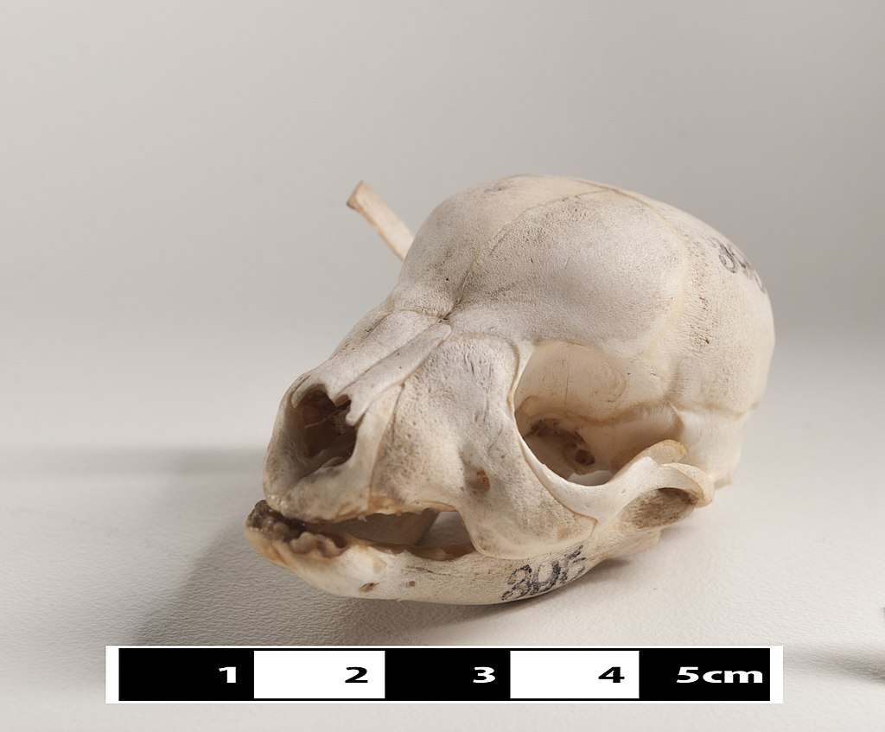

Domestic dogs have been selectively bred for millennia for various behaviors, sensory capabilities, and physical attributes. Modern dog breeds show more variation in size, appearance, and behavior than any other domestic animal. Dogs are predators and scavengers, and like many other predatory mammals, the dog has powerful muscles, fused wrist bones, a cardiovascular system that supports both sprinting and endurance, and teeth for catching and tearing.
Dogs are highly variable in height and weight. The smallest known adult dog was a Yorkshire Terrier, that stood only 6.3 cm (2.5 in) at the shoulder, 9.5 cm (3.7 in) in length along the head-and-body, and weighed only 113 grams (4.0 oz). The largest known dog was an English Mastiff which weighed 155.6 kg (343 lb) and was 250 cm (98 in) from the snout to the tail.The tallest dog is a Great Dane that stands 106.7 cm (42.0 in) at the shoulder.
The dog's senses include vision, hearing, sense of smell, sense of taste, touch and sensitivity to the earth's magnetic field. Another study suggested that dogs can see the earth's magnetic field.
The coats of domestic dogs are of two varieties: "double" being common with dogs (as well as wolves) originating from colder climates, made up of a coarse guard hair and a soft down hair, or "single", with the topcoat only. Breeds may have an occasional "blaze", stripe, or "star" of white fur on their chest or underside. Regarding coat appearance or health, the coat can be maintained or affected by multiple nutrients present in the diet, see Coat (dog) for more information. Premature graying can occur in dogs from as early as one year of age. This has been shown to be associated with impulsive behaviors, anxiety behaviors, fear of noise, and fear of unfamiliar people or animals.

There are many different shapes for dog tails: straight, straight up, sickle, curled, or cork-screw. As with many canids, one of the primary functions of a dog's tail is to communicate their emotional state, which can be important in getting along with others. In some hunting dogs, however, the tail is traditionally docked to avoid injuries. In some breeds, such as the Braque du Bourbonnais, puppies can be born with a short tail or no tail at all.
Despite their close genetic relationship and the ability to inter-breed, there are a number of diagnostic features to distinguish the gray wolves from domestic dogs. Domesticated dogs are clearly distinguishable from wolves by starch gel electrophoresis of red blood cell acid phosphatase. The tympanic bullae are large, convex and almost spherical in gray wolves, while the bullae of dogs are smaller, compressed and slightly crumpled. Compared with equally sized wolves, dogs tend to have 20% smaller skulls and 30% smaller brains. The teeth of gray wolves are also proportionately larger than those of dogs. Dogs have a more domed forehead and a distinctive "stop" between forehead and nose.The temporalis muscle that closes the jaws is more robust in wolves.Wolves do not have dewclaws on their back legs, unless there has been admixture with dogs that had them. Most dogs lack a functioning pre-caudal gland and enter estrus twice yearly, unlike gray wolves which only do so once a year. So-called primitive dogs such as dingoes and Basenjis retain the yearly estrus cycle. Dogs generally have brown eyes and wolves almost always have amber or light colored eyes.The skin of domestic dogs tends to be thicker than that of wolves, with some Inuit tribes favoring the former for use as clothing due to its greater resistance to wear and tear in harsh weather. The paws of a dog are half the size of those of a wolf, and their tails tend to curl upwards, another trait not found in wolves. The dog has developed into hundreds of varied breeds, and shows more behavioral and morphological variation than any other land mammal.